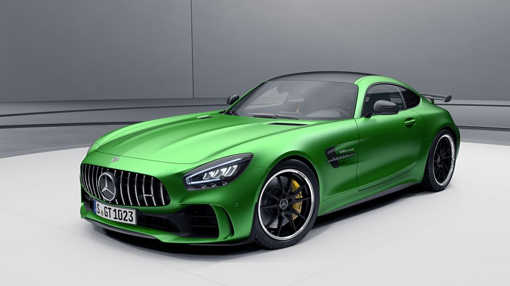
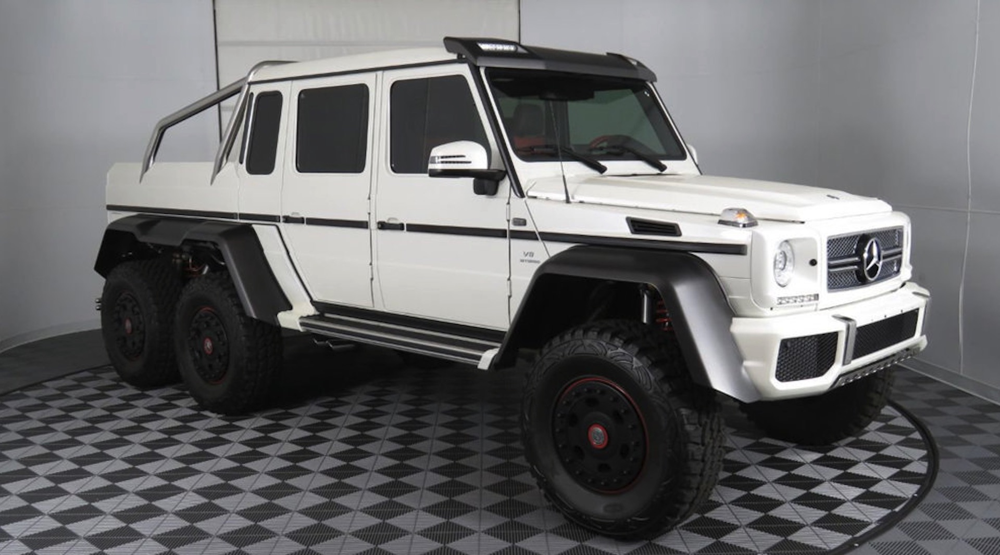
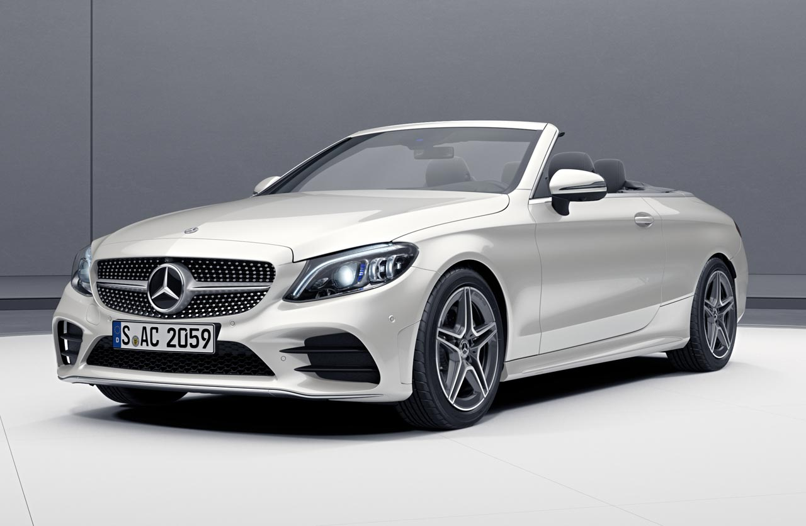

Mercedes Benz
Mercedes G63 4x4
VISIÓN GENERAL
El código genético de un todoterreno emblemático, robusto y prácticamente indestructible. Para ello diseñaron piezas que siguen asumiendo su función en nuestros días, sin necesidad de cambio alguno. Componentes que, a lo largo de varias generaciones, han desarrollado un carácter propio. No tiene igual desde hace más de 40 años. La Clase G es inconfundible, tanto en su exterior como en su interior. Pero no solo eso: gracias a la nueva G manufaktur, puedes configurar tu Clase G de modo que refleje de forma expresiva tu personalidad. Las sobresalientes prestaciones en régimen de conducción todoterreno constituyen el origen y el objetivo de la Clase G. Estas cotas han definido siempre el estándar en parámetros tales como la capacidad ascensional, la profundidad de vadeo y la inclinación lateral máxima.VISIÓN GENERAL Brilla en el exterior. Entusiasma en el interior. Desde siempre, la legendaria pintura bicolor ha puesto un broche de oro al lujo sobre ruedas. Para la Clase S Mercedes-Maybach puedes elegir entre nueve combinaciones cromáticas diferentes. A la hora de configurar el interior tienes a disposición tipos exclusivos de cuero en nuevos colores, nuevos elementos de adorno y costuras de adorno en color de contraste. Es probable que la combinación que elijas se utilice solamente en un automóvil, el tuyo. La Clase S Mercedes-Maybach Berlina encarna movilidad elegante en perfección. Elegancia, lujo y confort se aúnan en una experiencia de conducción única. |
 |
|  | VISIÓN GENERAL Un icono inimitable del automovilismo. Pura ambición, incluso a vehículo parado. Pura fascinación en todos los detalles. Quien sueña con un auténtico bólido de competición lo identifica de inmediato: no podría ser de otra manera. Interior exclusivo. Los asientos AMG Performance opcionales del Mercedes-AMG GT Coupé, con una posición especialmente deportiva, constituyen la base para un dominio seguro del vehículo. El acentuado contorno del asiento con reposacabezas integrado y placa AMG combina una sujeción lateral ideal para un estilo de conducción deportivo con una apariencia especialmente dinámica. Con ocasión de la reestilización se ofrecen con una nueva variante de tapizado. |
VISIÓN GENERAL Combina el motor del G63, un V-8 biturbo, con ejes de portal 6x6 , una versión pick-up de la carrocería Clase G y un interior de lujo. Se fabricó de 2013 a 2015, con una producción superior a los 100 vehículos. El G63 AMG 6 × 6 cuenta con tracción en las seis ruedas que funciona con un motor V-8 AMG DOHC de 32 válvulas y doble turbo de 5.5L, 536 hp y 561 lb-ft. El G63 AMG 6 × 6 está equipado con la transmisión automática de siete velocidades 7G-tronic de Mercedes ; su caja de transferencia puede variar entre una relación de rango alto de 0.87: 1 para conducción en carretera y una relación de rango bajo de 2.16: 1 para condiciones todoterreno a las seis ruedas en una división nominal de 30:40:30. Un eje adicional proporciona potencia al eje más trasero. El vehículo tiene cinco bloqueos de diferencial electrónicos, que pueden brindar un bloqueo del 100% de las seis ruedas, operados por tres interruptores en el tablero. |
 |
|  | VISIÓN GENERAL La Clase C Cabrio se muestra siempre en plena forma, tanto en el exterior como en el interior. La Clase C Cabrio viene directamente de un curso de entrenamiento intensivo y se muestra siempre en plena forma, tanto en el exterior como en el interior. Aquí se visualiza el futuro. El volante con botones Touch Control, los instrumentos y visualizadores completamente digitales, incluyendo la generación más reciente de equipos de infoentretenimiento, y la entrada de voz hacen posible un manejo altamente innovador. Confía en los sistemas de asistencia a la conducción de última generación. Los numerosos sistemas de seguridad y asistencia a la conducción de la Clase C Cabrio facilitan sensiblemente la tarea del conductor. |